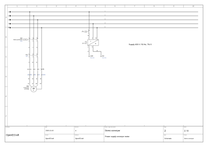
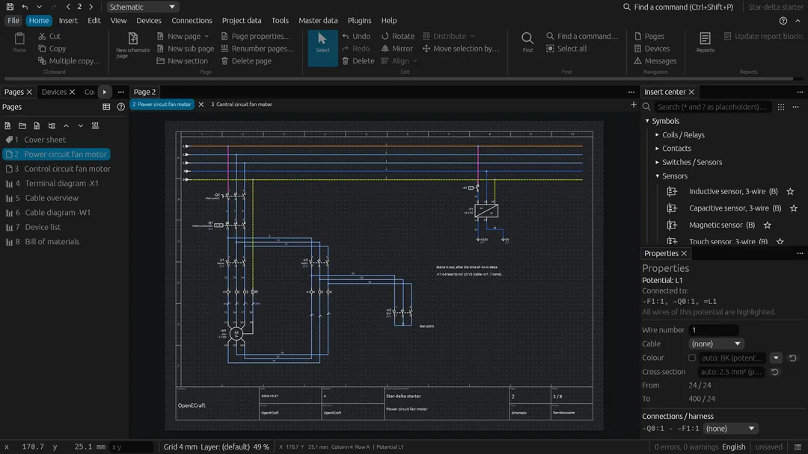
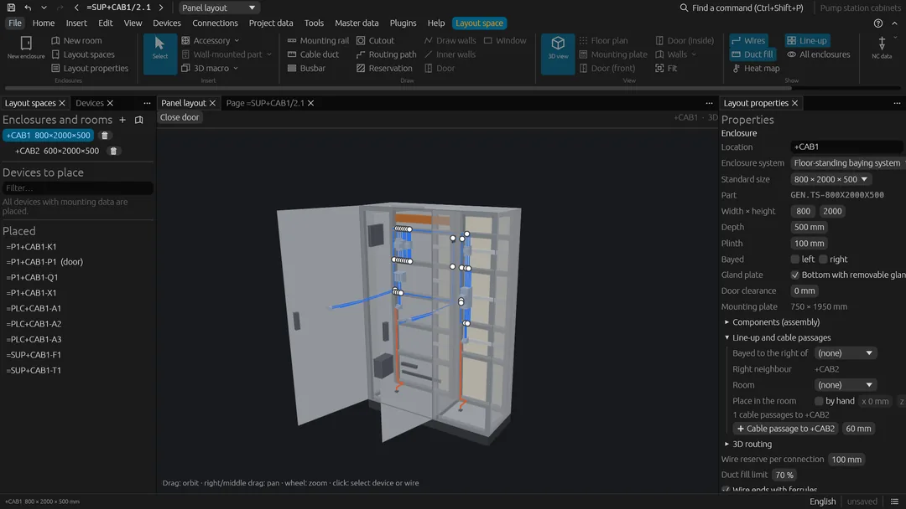
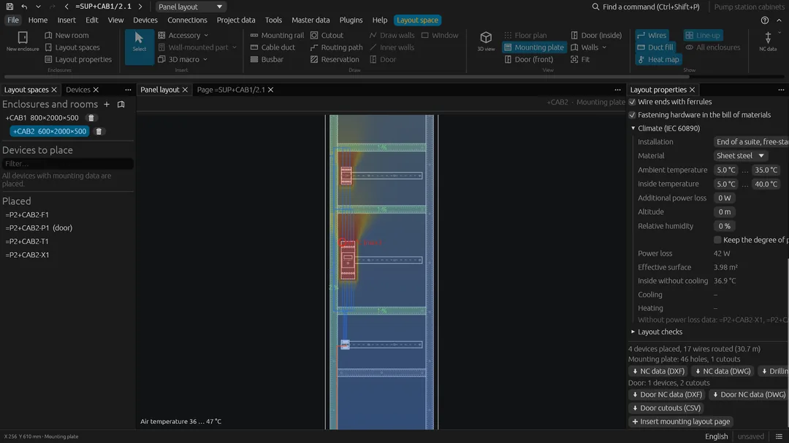
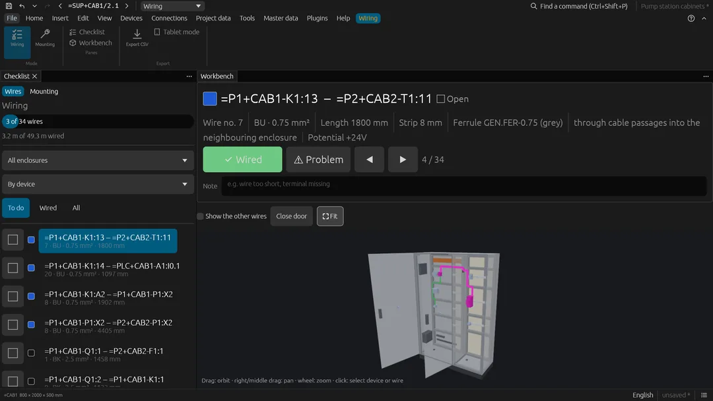
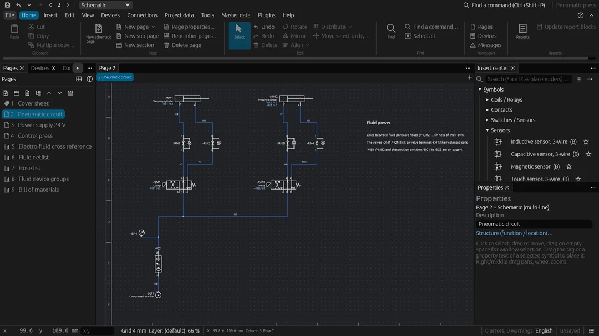
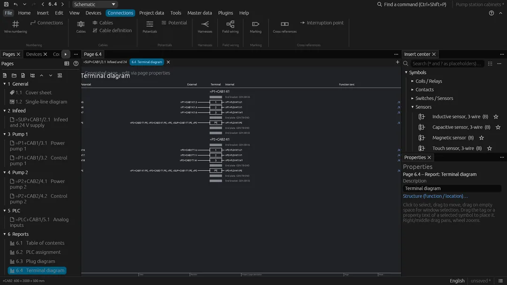

Device-oriented schematics
Coils and contacts form one device with live cross references and contact images, structure identifiers after IEC 81346, macros with variants.
Open source electrical CAE
OpenECraft plans electrical systems: device-oriented schematics, live reports, panel layout with routed wiring and the documentation for the customer. One code base for Windows, Linux, macOS and the browser.

This page is drawn right now by the editor's own code, running in your browser.
One project file holds the schematics, the parts, the panel and the documents. Every function is also a command, so scripts and AI agents can do what you can.
Coils and contacts form one device with live cross references and contact images, structure identifiers after IEC 81346, macros with variants.
About 330 IEC 60617 symbols, NFPA, GB, GOST and JIS sets, fluid power, P&ID and installation plans, and an editor for your own symbols.
Potentials with colours and cross-sections, cables with cores, automatic wire, device and page numbering.
Bill of materials, terminal, cable and plug diagrams as live pages, own drawn forms and a project check that follows every change.
Devices at real size on rails and plates, virtual wiring with duct fill levels, drilling data, enclosure climate, rooms and buildings.
Multi-level terminals, plugs and PLC cards with tag tables for TIA Portal, Studio 5000, TwinCAT, CODESYS and more.
Conductor sizing, short circuit and selectivity, load calculation, EMC and safety functions after ISO 13849-1.
Pneumatic and hydraulic circuits linked to the electrics, wire harnesses with KBL export and nailboards.
A parts database with mounting data and 3D models, imports from EDZ, BMEcat and STEP, shared through the parts server.
Shared projects with page locks and roles, released pages, approval workflow, comments and redlining.
PDF, DXF, DWG and SVG; the panel as glTF, STEP, IGES, IFC and JT; connectors for ERP, PDM and PLM systems.
A command line, an MCP server for AI agents and plugins in any language add checks, reports, exports and commands.
No screenshots: this is the page editor of OpenECraft. Select and move symbols, draw wires, place a contact and watch cross references, checks and reports follow.
On a touch screen one finger works like the left mouse button; two fingers move and zoom the view.
The same project, seen in the workshop: enclosure, rails, ducts and devices at real size, with the wires routed through the ducts. Switch between the enclosures, the rooms and the site of an example.
Drag to turn, scroll to zoom.Drag to turn, pinch with two fingers to zoom.
Every table is generated from the project and stays current: change the schematic above and the lists below follow. Plugins add their own.
The exports run in your browser as well. Nothing is uploaded.
Every operation on a project is a command: on the command line, for AI agents through the MCP server, and for plugins. Try some on the project above.
Switch the language while you work: menus, generated reports and check messages follow at once. Try it, this page and the demos switch too.






Whether you build control cabinets, plan buildings or teach: see what OpenECraft does for you, and how it compares with the tools you know.
From the schematic through the panel layout in 3D to the wiring in the workshop, with production data for the machines.
OpenECraft for panel buildersInstallation plans on the floor plan of the building, final circuits with cable lengths and voltage drop, the distribution board in 3D.
OpenECraft for electriciansFree for every student and in the browser, with a tutorial and example projects from the simplest circuit up.
OpenECraft for schoolsOpenECraft beside EPLAN Electric P8, AutoCAD Electrical and QElectroTech: what each is known for, and where OpenECraft is still young.
See the comparisonThe symbol library, the example projects, tools for your own files, guides, the documentation and the news.
Every symbol of the libraries with its drawing: IEC 60617, NFPA, GB, GOST, JIS, fluid power, P&ID and installation plans.
Browse the symbolsThe example projects with their sheets as pictures, their PDF and a link that opens them in the live demo.
See the examplesVoltage drop calculator, DXF and DWG viewer, EDZ and parts file viewer: in your browser, nothing is uploaded.
Use the toolsShort guides: terminal diagram, wire list, bill of materials, DXF and DWG export.
Read the guidesThe tutorial, the installation guide and every feature in detail.
Read the documentationAll documents in the repositoryWhat is new in every release, with a feed for your feed reader.
Read the newsIs it free? Does it read EPLAN data? Does it work offline? The answers.
Read the answersFree to use, free to change. Pick what fits you.
The full editor as a web application. Nothing to install, your projects stay on your computer.
Open the web editorInstallers for Windows, Linux packages and a macOS disk image, with automatic updates.
Download the latest releaseParts server, project server and the web editor as Docker images for your own network.
docker run -p 8080:8080 ghcr.io/nilres/openecraft-webWritten in Rust. Clone the repository and run it.
cargo run --release -p openecraft